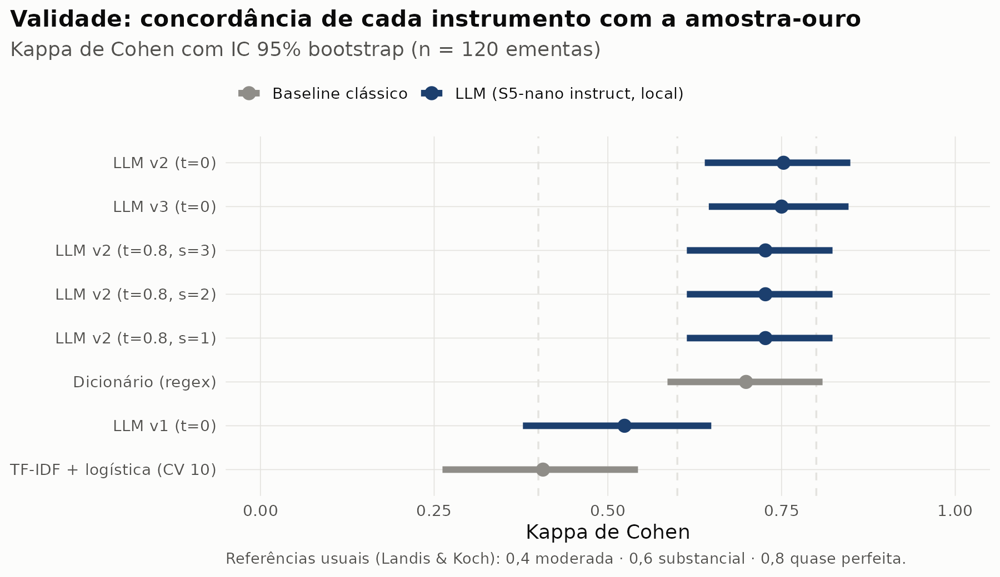
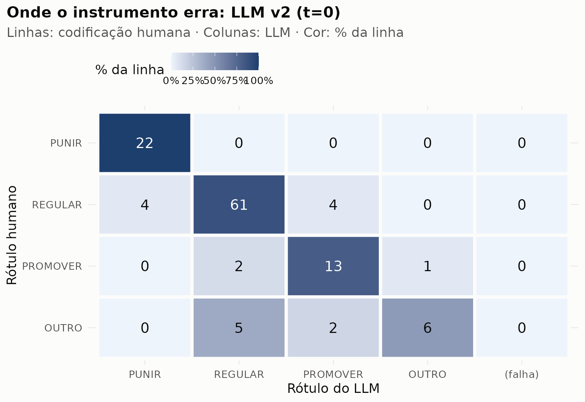
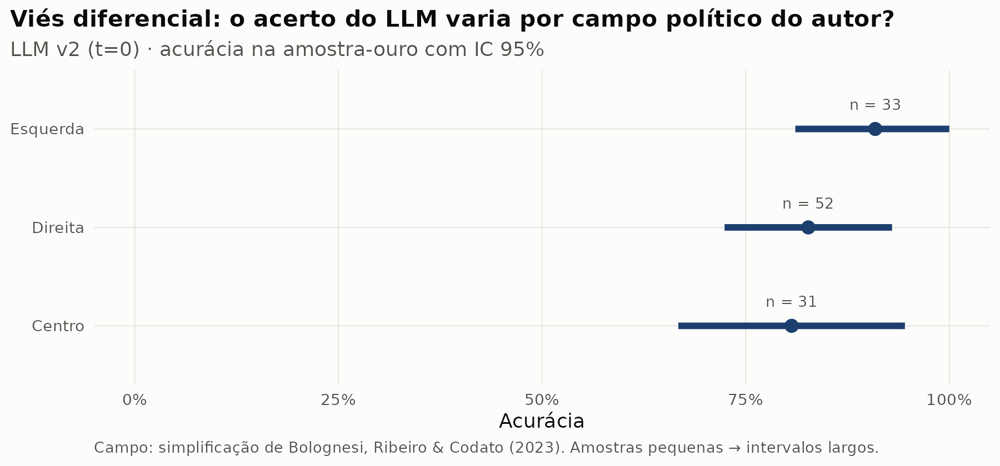
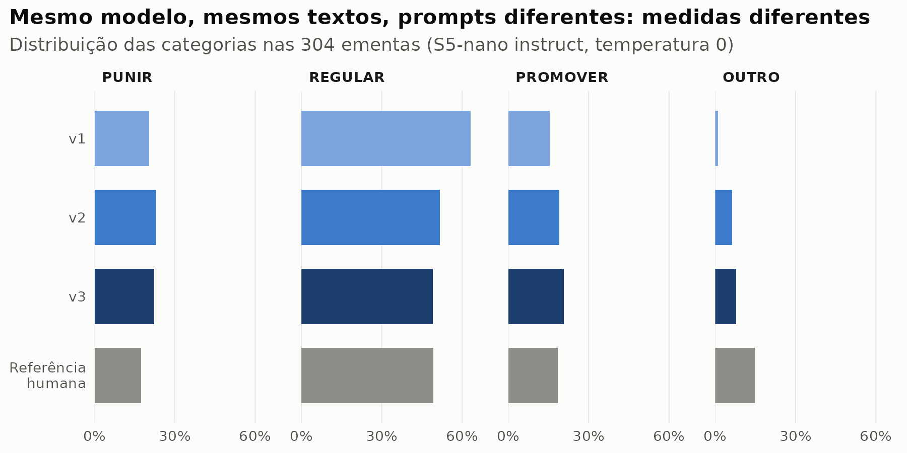

Capítulo 6 Validação: o instrumento mede o que diz medir?
Validar um instrumento é responder a quatro perguntas: ele acerta? (validade), onde erra? (matriz de confusão), erra igual para todos? (viés diferencial) e mede sempre igual? (confiabilidade). Todas as análises estão em R/05_validacao.R e python/04_validacao.ipynb.
6.1 Validade: concordância com a amostra-ouro
Comparamos o rótulo de cada instrumento com a referência humana nas 120 ementas da amostra-ouro, usando as três métricas definidas, com a notação da matriz de confusão, na Seção 4.3:
- Acurácia: proporção de acertos. Fácil de interpretar, mas enganosa com classes desbalanceadas.
- F1 macro: média do F1 de cada categoria (a média harmônica entre precisão e revocação), que dá o mesmo peso às categorias raras.
- Kappa de Cohen (Cohen 1960): acerto além do acaso,
\[ \kappa = \frac{p_o - p_e}{1 - p_e}, \]
em que \(p_o\) é a proporção de concordância observada e \(p_e\) a proporção esperada se os dois codificadores rotulassem ao acaso, mantendo suas distribuições marginais (\(p_e = \sum_c \frac{n_{c\cdot}}{N} \frac{n_{\cdot c}}{N}\)). Pela convenção de Landis e Koch (1977), valores acima de 0,4, 0,6 e 0,8 indicam concordância moderada, substancial e quase perfeita.
O kappa é implementado “na mão”, em poucas linhas, para mostrar que não há mágica nas métricas:
kappa_cohen <- function(a, b) {
ok <- !is.na(a) & !is.na(b)
a <- factor(a[ok], levels = CATEGORIAS); b <- factor(b[ok], levels = CATEGORIAS)
tab <- table(a, b)
n <- sum(tab)
po <- sum(diag(tab)) / n
pe <- sum(rowSums(tab) * colSums(tab)) / n^2
(po - pe) / (1 - pe)
}Com \(n = 120\), qualquer métrica tem incerteza considerável. Por isso relatamos o kappa com intervalo de confiança de 95% por bootstrap percentil (2.000 reamostragens das ementas).

Figura 6.1: Kappa de Cohen de cada instrumento contra a amostra-ouro, com IC 95% bootstrap.
| Instrumento | Falhas de formato | Acurácia | F1 macro | Kappa [IC 95%] |
|---|---|---|---|---|
| LLM v2 (t=0) | 0,0% | 85% | 0,79 | 0,75 [0,64; 0,85] |
| LLM v3 (t=0) | 0,0% | 84% | 0,79 | 0,75 [0,65; 0,85] |
| LLM v2 (t=0.8, s=1) | 0,0% | 83% | 0,76 | 0,73 [0,61; 0,82] |
| LLM v2 (t=0.8, s=2) | 0,0% | 83% | 0,76 | 0,73 [0,61; 0,82] |
| LLM v2 (t=0.8, s=3) | 0,0% | 83% | 0,76 | 0,73 [0,61; 0,82] |
| Dicionário (regex) | 0,0% | 81% | 0,78 | 0,70 [0,59; 0,81] |
| LLM v1 (t=0) | 0,0% | 72% | 0,55 | 0,52 [0,38; 0,65] |
| TF-IDF + logística (CV 10) | 0,0% | 68% | 0,50 | 0,41 [0,26; 0,54] |
Três leituras dessa tabela:
- O prompt importa. O melhor LLM (LLM v2 (t=0), kappa 0,75) supera com folga a versão sem definições (v1, kappa 0,52).
- O LLM ficou à frente do dicionário só na estimativa pontual (kappa 0,70), e o dicionário ainda “viu a prova” (Capítulo 4). Os intervalos se sobrepõem amplamente: com 120 ementas, não há evidência de diferença entre os dois.
- O LLM supera o TF-IDF (kappa 0,41), que precisaria de muito mais exemplos rotulados para aprender.
6.2 Onde o instrumento erra

Figura 6.2: Matriz de confusão do melhor LLM com temperatura 0 ( LLM v2 (t=0) ). Linhas: referência humana; colunas: LLM.
A matriz de confusão mostra quais erros o instrumento comete. Erros não são todos iguais: confundir REGULAR com PUNIR infla a proporção punitiva que queremos estimar; confundir REGULAR com PROMOVER não a afeta.
6.3 Viés diferencial
Acurácia alta na média não garante comparações válidas entre grupos. Se o LLM erra mais nas ementas de um campo político, qualquer comparação entre campos feita com seus rótulos estará enviesada, mesmo com kappa alto no geral. Isso é especialmente relevante dado o viés político documentado em LLMs (Motoki et al. 2024; Rozado 2024).

Figura 6.3: Acurácia do melhor LLM na amostra-ouro por campo político do autor, com IC 95%.
| Campo | n | Acurácia | PUNIR (humano) | PUNIR (LLM) | Viés em PUNIR (p.p.) |
|---|---|---|---|---|---|
| Centro | 31 | 81% | 16,1% | 19,4% | 3,2 |
| Direita | 52 | 83% | 15,4% | 19,2% | 3,8 |
| Esquerda | 33 | 91% | 18,2% | 21,2% | 3,0 |
Os pontos estimados sugerem que o LLM acerta menos nas ementas de autores de centro (81%) do que nas de esquerda (91%). Na proporção punitiva, que é o que vamos estimar, o viés por campo vai de 3,0 a 3,8 pontos percentuais. Mas os intervalos são largos (com 31 a 52 ementas por campo) e se sobrepõem. A lição não é “o LLM é enviesado contra este ou aquele campo”, e sim: com esta amostra-ouro, não é possível descartar viés diferencial, e isso precisa ser levado em conta na inferência por grupo.
6.4 Confiabilidade
Um instrumento confiável dá a mesma resposta quando medido de novo. Avaliamos duas fontes de instabilidade, nenhuma das quais precisa de rótulo humano:
- Teste-reteste: o mesmo prompt (v2), a mesma ementa, temperatura 0,8 e três sementes diferentes.
- Sensibilidade ao prompt: o mesmo modelo, temperatura 0, três redações (v1, v2, v3) do mesmo livro de códigos.
A concordância entre as execuções é medida pelo alfa de Krippendorff (Krippendorff 2018), que generaliza o kappa para qualquer número de codificadores e aceita dados faltantes:
\[ \alpha = 1 - \frac{D_o}{D_e}, \]
em que \(D_o\) é a discordância observada e \(D_e\) a discordância esperada ao acaso.
| Comparação | Alfa de Krippendorff | Ementas que mudam de rótulo |
|---|---|---|
| Teste-reteste (v2, t=0,8, 3 sementes) | 1,00 | 0,0% |
| Sensibilidade ao prompt (v1, v2, v3; t=0) | 0,75 | 23,4% |
O prompt importa muito mais que o acaso. Trocar a semente muda o rótulo de 0% das ementas; trocar a redação do prompt muda 23%. E a mudança não é só ruído: ela altera a distribuição agregada das categorias.

Figura 6.4: Distribuição das categorias nas 304 ementas segundo cada prompt, comparada à referência humana.
6.5 A variável eleitoral
| Prompt | Eleitorais (humano) | Eleitorais (LLM) | Sensibilidade | Especificidade |
|---|---|---|---|---|
| v1 | 8 | 8 | 100% | 100,0% |
| v2 | 8 | 8 | 100% | 100,0% |
| v3 | 8 | 8 | 100% | 100,0% |
Para uma variável rara, acurácia não informa quase nada. Sensibilidade (dos projetos eleitorais, quantos o LLM identificou?) e especificidade (dos não eleitorais, quantos ele descartou?) são as métricas relevantes. Com apenas 8 ementas eleitorais na amostra-ouro, a sensibilidade é estimada com muito pouca precisão.
6.6 Humano × humano
A comparação mais honesta que podemos fazer é esta: o LLM concorda com a referência tanto quanto os humanos concordam entre si? Neste material ela ainda não é possível, porque a referência foi produzida por outra IA e não há dois codificadores humanos (Seção 3.2). Quando houver, basta salvar as codificações em material_apoio/respostas/: o mesmo R/05_validacao.R calcula o alfa de Krippendorff entre elas. Até lá, o kappa acima deve ser lido como concordância entre duas IAs, não como validade contra humanos.
Síntese da validação O melhor LLM tem concordância substancial com a referência, é estável entre sementes, mas é sensível ao prompt, e não se pode descartar que erre de forma diferente entre campos políticos. Ele é um bom instrumento, mas imperfeito. O próximo capítulo mostra como usá-lo sem esconder essa imperfeição.
6.7 Mão na massa: validar o instrumento
Como executar
- Em R:
Rscript R/05_validacao.R(cerca de 1 minuto, por causa do bootstrap). Grava as tabelasvalidade_instrumentos.csv,confiabilidade.csv,vies_diferencial_campo.csvevalidade_eleitoral.csve as figuras 01 a 04 emresultados/. Depende deR/03_baselines.Rter rodado antes (usadados/anotacoes/predicoes_baselines.csv). - Em Python: notebook
python/04_validacao.ipynb(grava emresultados/python/). - Os blocos abaixo refazem as contas principais sem gravar nada. Não é preciso GPU nem Ollama: tudo vem do cache.
6.7.1 Juntar o LLM à amostra-ouro
source("R/funcoes_medicao.R")
corpus <- carrega_corpus()
ouro <- carrega_ouro()
llm <- carrega_llm()
# Nome legível de cada execução: "LLM v2 (t=0)", "LLM v2 (t=0.8, s=1)", ...
rotulo_run <- function(run_id) {
p <- str_match(run_id, "__(v\\d)__t([0-9.]+)__s(\\d+)")
ifelse(p[, 3] == "0.0" & p[, 4] == "42", paste0("LLM ", p[, 2], " (t=0)"),
paste0("LLM ", p[, 2], " (t=", p[, 3], ", s=", p[, 4], ")"))
}
llm <- llm |> mutate(instrumento = rotulo_run(run_id))
aval <- llm |> inner_join(select(ouro, doc_id, categoria), by = "doc_id")
count(aval, instrumento)# A tibble: 6 × 2
instrumento n
<chr> <int>
1 LLM v1 (t=0) 120
2 LLM v2 (t=0) 120
3 LLM v2 (t=0.8, s=1) 120
4 LLM v2 (t=0.8, s=2) 120
5 LLM v2 (t=0.8, s=3) 120
6 LLM v3 (t=0) 120import numpy as np
from medicao import (carrega_corpus, carrega_ouro, carrega_llm, rotulo_run,
resumo_metricas, boot_ic, kappa_cohen, alfa_krippendorff)
corpus = carrega_corpus(".")
ouro = carrega_ouro(".")AVISO: a amostra-ouro ainda NÃO foi revisada por humanos (coluna `revisado`). Os resultados são ilustrativos.llm = carrega_llm(".")
llm["instrumento"] = llm["run_id"].map(rotulo_run)
aval = llm.merge(ouro[["doc_id", "categoria"]], on="doc_id")
aval["instrumento"].value_counts().sort_index()instrumento
LLM v1 (t=0) 120
LLM v2 (t=0) 120
LLM v2 (t=0.8, s=1) 120
LLM v2 (t=0.8, s=2) 120
LLM v2 (t=0.8, s=3) 120
LLM v3 (t=0) 120
Name: count, dtype: int64O que está sendo executado. O cache tem 304 respostas por execução; a junção (inner_join/merge) com a amostra-ouro mantém só as 120 ementas que têm rótulo humano. Cada execução do LLM vira um “instrumento” com nome próprio, para ser comparado com os outros.
6.7.2 Validade com intervalo bootstrap
Antes de calcular tudo de uma vez, vale ver o bootstrap funcionando para um instrumento: reamostramos as 120 ementas com reposição, recalculamos o kappa e repetimos 2.000 vezes. Os percentis 2,5% e 97,5% dessas 2.000 réplicas formam o intervalo de 95%.
d <- filter(aval, instrumento == "LLM v2 (t=0)")
kappa_cohen(d$categoria, d$categoria_llm) # estimativa pontual[1] 0.7528887set.seed(2026)
kappas <- replicate(2000, {
i <- sample.int(nrow(d), nrow(d), replace = TRUE) # uma amostra bootstrap
kappa_cohen(d$categoria[i], d$categoria_llm[i])
})
quantile(kappas, c(.025, .975)) # IC 95% percentil 2.5% 97.5%
0.6395082 0.8489842 library(ggplot2)
ggplot(data.frame(kappa = kappas), aes(kappa)) +
geom_histogram(bins = 40, fill = "#7ba4de") +
geom_vline(xintercept = quantile(kappas, c(.025, .975)), linetype = 2) +
labs(x = "Kappa nas 2.000 amostras bootstrap", y = NULL) + theme_minimal(11)
import matplotlib.pyplot as plt
d = aval[aval["instrumento"] == "LLM v2 (t=0)"]
print(round(kappa_cohen(d["categoria"], d["categoria_llm"]), 4)) # estimativa pontual0.7529rng = np.random.default_rng(2026)
v, p = d["categoria"].to_numpy(), d["categoria_llm"].to_numpy()
kappas = []
for _ in range(2000):
i = rng.integers(0, len(d), len(d)) # uma amostra bootstrap
kappas.append(kappa_cohen(v[i], p[i]))
print(np.quantile(kappas, [0.025, 0.975]).round(4)) # IC 95% percentil[0.6341 0.8525](array([ 1., 0., 0., 2., 6., 8., 10., 13., 23., 16., 18.,
29., 46., 54., 55., 73., 78., 89., 112., 123., 144., 130.,
144., 126., 124., 134., 106., 80., 64., 57., 42., 32., 22.,
16., 7., 3., 4., 6., 2., 1.]), array([0.55770208, 0.56675708, 0.57581209, 0.58486709, 0.59392209,
0.60297709, 0.61203209, 0.62108709, 0.63014209, 0.63919709,
0.64825209, 0.65730709, 0.66636209, 0.67541709, 0.68447209,
0.69352709, 0.70258209, 0.71163709, 0.72069209, 0.72974709,
0.73880209, 0.74785709, 0.75691209, 0.76596709, 0.7750221 ,
0.7840771 , 0.7931321 , 0.8021871 , 0.8112421 , 0.8202971 ,
0.8293521 , 0.8384071 , 0.8474621 , 0.8565171 , 0.8655721 ,
0.8746271 , 0.8836821 , 0.8927371 , 0.9017921 , 0.9108471 ,
0.9199021 ]), <BarContainer object of 40 artists>)<matplotlib.lines.Line2D object at 0x75aaa9e88110>
<matplotlib.lines.Line2D object at 0x75aa6bfd52d0>Text(0.5, 0, 'Kappa nas 2.000 amostras bootstrap')
O IC sai um pouco diferente nas duas linguagens (na terceira casa decimal): a semente é a mesma, mas os geradores de números aleatórios não são. Agora, todos os instrumentos de uma vez, com a função boot_ic(), que faz exatamente o que fizemos acima:
metricas <- aval |>
group_by(instrumento) |>
group_modify(\(d, ...) {
ic <- boot_ic(d$categoria, d$categoria_llm)
resumo_metricas(d$categoria, d$categoria_llm) |>
mutate(kappa_li = ic[1], kappa_ls = ic[2])
}) |>
ungroup() |>
arrange(desc(kappa))
metricas |>
select(-n, -falhas_formato) |>
mutate(across(where(is.double), \(x) round(x, 3)))# A tibble: 6 × 6
instrumento acuracia f1_macro kappa kappa_li kappa_ls
<chr> <dbl> <dbl> <dbl> <dbl> <dbl>
1 LLM v2 (t=0) 0.85 0.788 0.753 0.64 0.849
2 LLM v3 (t=0) 0.842 0.793 0.75 0.645 0.846
3 LLM v2 (t=0.8, s=1) 0.833 0.757 0.727 0.614 0.823
4 LLM v2 (t=0.8, s=2) 0.833 0.757 0.727 0.614 0.823
5 LLM v2 (t=0.8, s=3) 0.833 0.757 0.727 0.614 0.823
6 LLM v1 (t=0) 0.725 0.551 0.524 0.378 0.649linhas = []
for nome, g in aval.groupby("instrumento"):
li, ls = boot_ic(g["categoria"], g["categoria_llm"])
m = resumo_metricas(g["categoria"], g["categoria_llm"])
linhas.append({"instrumento": nome, **m, "kappa_li": li, "kappa_ls": ls})
metricas = pd.DataFrame(linhas).sort_values("kappa", ascending=False)
metricas.drop(columns=["n", "falhas_formato"]).round(3) instrumento acuracia f1_macro kappa kappa_li kappa_ls
1 LLM v2 (t=0) 0.850 0.788 0.753 0.634 0.852
5 LLM v3 (t=0) 0.842 0.793 0.750 0.636 0.851
2 LLM v2 (t=0.8, s=1) 0.833 0.757 0.727 0.609 0.830
3 LLM v2 (t=0.8, s=2) 0.833 0.757 0.727 0.609 0.830
4 LLM v2 (t=0.8, s=3) 0.833 0.757 0.727 0.609 0.830
0 LLM v1 (t=0) 0.725 0.551 0.524 0.387 0.652O que está sendo executado. Para cada instrumento, group_modify() (R) ou o laço sobre groupby() (Python) separa as 120 linhas daquele instrumento, calcula acurácia, F1 macro e kappa com resumo_metricas() e o IC bootstrap do kappa com boot_ic(). A tabela publicada (Tabela 6.1) acrescenta os dois baselines do capítulo anterior.
6.7.3 Onde o melhor instrumento erra
melhor <- metricas |> filter(str_detect(instrumento, "t=0\\)")) |>
slice_max(kappa, n = 1) |> pull(instrumento)
melhor[1] "LLM v2 (t=0)" llm
humano PUNIR REGULAR PROMOVER OUTRO
OUTRO 0 5 2 6
PROMOVER 0 2 13 1
PUNIR 22 0 0 0
REGULAR 4 61 4 0# Alguns erros, para ler com calma
d |>
filter(as.character(categoria) != as.character(categoria_llm)) |>
left_join(select(corpus, doc_id, ementa), by = "doc_id") |>
head(5) |>
with(cat(sprintf("%s humano: %-8s LLM: %-8s %s", doc_id, categoria, categoria_llm,
substr(ementa, 1, 70)), sep = "\n"))doc0013 humano: REGULAR LLM: PUNIR Altera a Lei nº 9.504, de 30 de setembro de 1997, que estabelece norma
doc0020 humano: REGULAR LLM: PROMOVER Dispõe sobre a criação do Fundo de Renda Básica, que será utilizado pa
doc0034 humano: REGULAR LLM: PUNIR Altera a Lei nº 9.504, de 30 de setembro de 1997, para dispor sobre a
doc0045 humano: REGULAR LLM: PUNIR Proíbe o uso de Aplicativos e Programas de Inteligência Artificial par
doc0073 humano: PROMOVER LLM: REGULAR Dispõe sobre a utilização de ferramentas tecnológicas de inteligência llm_t0 = metricas[metricas["instrumento"].str.contains(r"t=0\)")]
melhor = llm_t0.iloc[0]["instrumento"]
print(melhor)LLM v2 (t=0)d = aval[aval["instrumento"] == melhor]
print(pd.crosstab(d["categoria"], d["categoria_llm"],
rownames=["humano"], colnames=["llm"]))llm OUTRO PROMOVER PUNIR REGULAR
humano
OUTRO 6 2 0 5
PROMOVER 1 13 0 2
PUNIR 0 0 22 0
REGULAR 0 4 4 61# Alguns erros, para ler com calma
erros = (d[d["categoria"] != d["categoria_llm"]]
.merge(corpus[["doc_id", "ementa"]], on="doc_id"))
for r in erros.head(5).itertuples():
print(f"{r.doc_id} humano: {r.categoria:8} LLM: {r.categoria_llm:8} {r.ementa[:70]}")doc0013 humano: REGULAR LLM: PUNIR Altera a Lei nº 9.504, de 30 de setembro de 1997, que estabelece norma
doc0020 humano: REGULAR LLM: PROMOVER Dispõe sobre a criação do Fundo de Renda Básica, que será utilizado pa
doc0034 humano: REGULAR LLM: PUNIR Altera a Lei nº 9.504, de 30 de setembro de 1997, para dispor sobre a
doc0045 humano: REGULAR LLM: PUNIR Proíbe o uso de Aplicativos e Programas de Inteligência Artificial par
doc0073 humano: PROMOVER LLM: REGULAR Dispõe sobre a utilização de ferramentas tecnológicas de inteligência O que está sendo executado. O melhor instrumento com temperatura 0 é escolhido pelo maior kappa. A tabela cruzada é a matriz de confusão da Figura 6.2, em números absolutos. A lista de erros é o passo que costuma ser pulado e não deveria: ler as ementas em que o instrumento discorda da referência mostra se o erro é do LLM, da referência ou do livro de códigos (casos que as regras não resolvem).
6.7.4 Viés diferencial por campo político
dif <- d |>
left_join(select(corpus, doc_id, campo), by = "doc_id") |>
filter(campo != "Sem partido/Outro") |>
mutate(acerto = as.character(categoria) == as.character(categoria_llm),
punir_h = categoria == "PUNIR", punir_l = categoria_llm %in% "PUNIR")
dif |>
group_by(campo) |>
summarise(n = n(), acuracia = mean(acerto),
punir_humano = mean(punir_h), punir_llm = mean(punir_l)) |>
mutate(vies_punir = punir_llm - punir_humano)# A tibble: 3 × 6
campo n acuracia punir_humano punir_llm vies_punir
<chr> <int> <dbl> <dbl> <dbl> <dbl>
1 Centro 31 0.806 0.161 0.194 0.0323
2 Direita 52 0.827 0.154 0.192 0.0385
3 Esquerda 33 0.909 0.182 0.212 0.0303# O acerto depende do campo? Regressão logística + teste da razão de verossimilhança
anova(glm(acerto ~ campo, family = binomial, data = dif), test = "Chisq")Analysis of Deviance Table
Model: binomial, link: logit
Response: acerto
Terms added sequentially (first to last)
Df Deviance Resid. Df Resid. Dev Pr(>Chi)
NULL 115 100.126
campo 2 1.6415 113 98.484 0.4401from scipy.stats import chi2_contingency
dif = d.merge(corpus[["doc_id", "campo"]], on="doc_id")
dif = dif[dif["campo"] != "Sem partido/Outro"].assign(
acerto=lambda x: x["categoria"] == x["categoria_llm"],
punir_h=lambda x: x["categoria"] == "PUNIR",
punir_l=lambda x: x["categoria_llm"] == "PUNIR")
tab = dif.groupby("campo").agg(n=("acerto", "size"), acuracia=("acerto", "mean"),
punir_humano=("punir_h", "mean"),
punir_llm=("punir_l", "mean"))
tab["vies_punir"] = tab["punir_llm"] - tab["punir_humano"]
print(tab.round(3)) n acuracia punir_humano punir_llm vies_punir
campo
Centro 31 0.806 0.161 0.194 0.032
Direita 52 0.827 0.154 0.192 0.038
Esquerda 33 0.909 0.182 0.212 0.030# O acerto depende do campo? Teste qui-quadrado de independência
qui = chi2_contingency(pd.crosstab(dif["campo"], dif["acerto"]))
print(f"Qui-quadrado = {qui.statistic:.2f}, gl = {qui.dof}, p = {qui.pvalue:.3f}")Qui-quadrado = 1.51, gl = 2, p = 0.469O que está sendo executado. Para cada campo, calculamos a acurácia do LLM e a proporção de PUNIR segundo o humano e segundo o LLM; a diferença entre as duas é o viés do LLM na quantidade que vamos estimar. O teste pergunta se a taxa de acerto varia entre os campos mais do que o acaso explicaria. Em R usamos uma regressão logística (o mesmo modelo permitiria controlar por casa ou ano); em Python, o qui-quadrado de uma tabela campo × acerto. Os dois respondem à mesma pergunta, e um p-valor alto aqui não prova ausência de viés: com 31 a 52 ementas por campo, o teste tem pouco poder.
6.7.5 Confiabilidade: sementes e prompts
library(tidyr)
muda <- function(m) mean(apply(m, 1, \(x) length(unique(na.omit(x))) > 1))
# (a) Teste-reteste: prompt v2, temperatura 0,8, sementes 1, 2 e 3
largo_seed <- llm |>
filter(prompt_id == "v2", temperatura > 0) |>
select(doc_id, semente, categoria_llm) |>
mutate(categoria_llm = as.character(categoria_llm)) |>
pivot_wider(names_from = semente, values_from = categoria_llm)
head(largo_seed, 3)# A tibble: 3 × 4
doc_id `1` `2` `3`
<chr> <chr> <chr> <chr>
1 doc0001 REGULAR REGULAR REGULAR
2 doc0002 REGULAR REGULAR REGULAR
3 doc0003 REGULAR REGULAR REGULARalfa muda
1 0 # (b) Sensibilidade ao prompt: v1, v2, v3 com temperatura 0
largo_prompt <- llm |>
filter(temperatura == 0, semente == 42) |>
select(doc_id, prompt_id, categoria_llm) |>
mutate(categoria_llm = as.character(categoria_llm)) |>
pivot_wider(names_from = prompt_id, values_from = categoria_llm)
m_prompt <- select(largo_prompt, -doc_id)
c(alfa = alfa_krippendorff(m_prompt), muda = muda(m_prompt)) alfa muda
0.7462544 0.2335526 def muda(m):
return np.mean([len(set(x.dropna())) > 1 for _, x in m.iterrows()])
# (a) Teste-reteste: prompt v2, temperatura 0,8, sementes 1, 2 e 3
largo_seed = (llm[(llm["prompt_id"] == "v2") & (llm["temperatura"] > 0)]
.pivot(index="doc_id", columns="semente", values="categoria_llm"))
print(largo_seed.head(3))semente 1 2 3
doc_id
doc0001 REGULAR REGULAR REGULAR
doc0002 REGULAR REGULAR REGULAR
doc0003 REGULAR REGULAR REGULARalfa = 1.0000 muda = 0.0000# (b) Sensibilidade ao prompt: v1, v2, v3 com temperatura 0
largo_prompt = (llm[(llm["temperatura"] == 0) & (llm["semente"] == 42)]
.pivot(index="doc_id", columns="prompt_id", values="categoria_llm"))
print(f"alfa = {alfa_krippendorff(largo_prompt):.4f} muda = {muda(largo_prompt):.4f}")alfa = 0.7463 muda = 0.2336Quais ementas mudam de rótulo quando só a redação do prompt muda?
largo_prompt |>
filter(v1 != v2 | v2 != v3) |>
left_join(select(corpus, doc_id, ementa), by = "doc_id") |>
head(5) |>
with(cat(sprintf("%s v1: %-8s v2: %-8s v3: %-8s %s", doc_id, v1, v2, v3,
substr(ementa, 1, 55)), sep = "\n"))doc0004 v1: OUTRO v2: REGULAR v3: OUTRO Dispõe sobre o uso da Inteligência Artificial.
doc0007 v1: REGULAR v2: PROMOVER v3: PROMOVER Dispõe sobre a compatibilização dos sistemas de Intelig
doc0009 v1: PROMOVER v2: PROMOVER v3: OUTRO Institui a Política Nacional de Educação Digital; alter
doc0010 v1: REGULAR v2: OUTRO v3: OUTRO Dispõe sobre a reforma da Lei nº 9.784/99 (Lei de Proce
doc0012 v1: REGULAR v2: PROMOVER v3: PROMOVER Estabelece procedimentos a serem adotados pela União emmudam = largo_prompt[(largo_prompt["v1"] != largo_prompt["v2"]) |
(largo_prompt["v2"] != largo_prompt["v3"])]
mudam = mudam.reset_index().merge(corpus[["doc_id", "ementa"]], on="doc_id")
for r in mudam.head(5).itertuples():
print(f"{r.doc_id} v1: {r.v1:8} v2: {r.v2:8} v3: {r.v3:8} {r.ementa[:55]}")doc0004 v1: OUTRO v2: REGULAR v3: OUTRO Dispõe sobre o uso da Inteligência Artificial.
doc0007 v1: REGULAR v2: PROMOVER v3: PROMOVER Dispõe sobre a compatibilização dos sistemas de Intelig
doc0009 v1: PROMOVER v2: PROMOVER v3: OUTRO Institui a Política Nacional de Educação Digital; alter
doc0010 v1: REGULAR v2: OUTRO v3: OUTRO Dispõe sobre a reforma da Lei nº 9.784/99 (Lei de Proce
doc0012 v1: REGULAR v2: PROMOVER v3: PROMOVER Estabelece procedimentos a serem adotados pela União emO que está sendo executado. pivot_wider()/pivot() transforma a tabela longa do cache (uma linha por ementa e execução) numa matriz ementas × execuções, o formato que o alfa de Krippendorff espera: cada execução faz o papel de um “codificador”. A função muda() conta a proporção de ementas que receberam mais de um rótulo diferente. Nenhum rótulo humano é usado aqui: confiabilidade é sobre a estabilidade do instrumento, não sobre seu acerto.
6.7.6 A variável eleitoral
llm |>
filter(temperatura == 0, semente == 42) |>
inner_join(select(ouro, doc_id, eleitoral), by = "doc_id") |>
group_by(prompt_id) |>
summarise(eleitorais_humano = sum(eleitoral),
eleitorais_llm = sum(eleitoral_llm, na.rm = TRUE),
sensibilidade = mean(eleitoral_llm[eleitoral == 1], na.rm = TRUE),
especificidade = mean(!eleitoral_llm[eleitoral == 0], na.rm = TRUE))# A tibble: 3 × 5
prompt_id eleitorais_humano eleitorais_llm sensibilidade especificidade
<chr> <dbl> <int> <dbl> <dbl>
1 v1 8 8 1 1
2 v2 8 8 1 1
3 v3 8 8 1 1e = llm[(llm["temperatura"] == 0) & (llm["semente"] == 42)].merge(
ouro[["doc_id", "eleitoral"]], on="doc_id")
e["eleitoral_llm"] = e["eleitoral_llm"].astype(bool)
e.groupby("prompt_id").apply(lambda g: pd.Series({
"eleitorais_humano": g["eleitoral"].sum(),
"eleitorais_llm": g["eleitoral_llm"].sum(),
"sensibilidade": g.loc[g["eleitoral"] == 1, "eleitoral_llm"].mean(),
"especificidade": (~g.loc[g["eleitoral"] == 0, "eleitoral_llm"]).mean()})).round(3) eleitorais_humano eleitorais_llm sensibilidade especificidade
prompt_id
v1 8.0 8.0 1.0 1.0
v2 8.0 8.0 1.0 1.0
v3 8.0 8.0 1.0 1.0O que está sendo executado. A sensibilidade é a média do rótulo do LLM entre as ementas que o humano marcou como eleitorais; a especificidade, a média do “não eleitoral” do LLM entre as que o humano marcou como não eleitorais. Com só 8 ementas eleitorais na amostra-ouro, cada acerto ou erro move a sensibilidade em mais de 10 pontos percentuais.